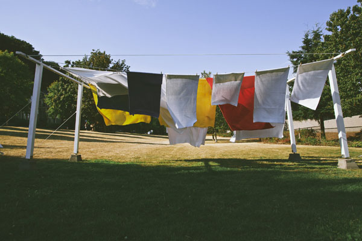
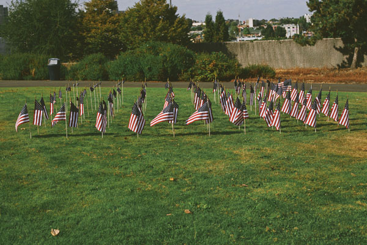
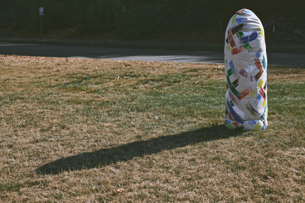
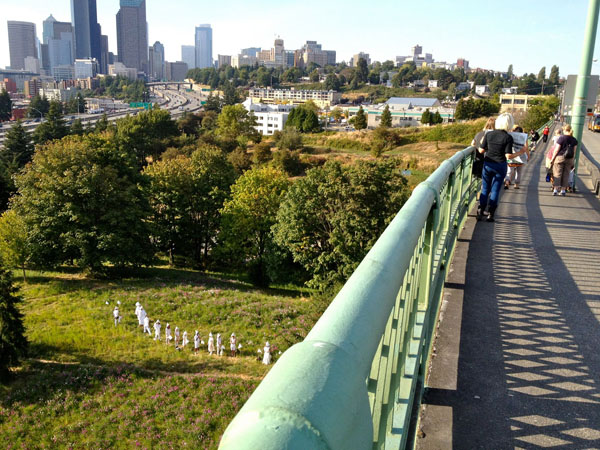

It's All Downhill From Here: Getting ready! Photo Eric Becker.
Rockwood by Zack Bent, featuring sound by Roberto Carlos Lange.
It's All Downhill From Here/5k Don't Run Registration by Vis-a-Vis Society. Photo Eric Becker.
Ve-uws by Julia Freeman. Photo Dan Bennett.
Ve-uws necklace by Julia Freeman. Photo Dan Bennett.
PaceSetter by Britta Johnson. Photo Dan Bennett.
Britta Johnson with crazy kid in the background. Photo Eric Becker.
INSTANT REMINISCENCE by Graham Downing and Max Kraushaar.
Erin Elyse Burns getting ready for Tumbleweed Trundling.
Bombay Beach by Virginia Wilcox. Photo Dan Bennett.
Mrs. Eagor and Mr. Unger installation/performance by Hanita Schwartz and Meital Katz-Minerbo. Photo Eric Becker.
Hanita Schwartz performing Mrs. Eagor and Mr. Unger
Winky's Eye Cumulus by Glenn Herlihy. Photo Eric Becker.
flyers by Nathaniel Russell. Photo Eric Becker.
Alice Gosti and Monica Mata Gilliam performing The endless goodbye score - it's a force field. Photo Eric Becker.
flyers by Nathaniel Russell. Photo Eric Becker.
you're making this really hard on me - performance by Lindsey Apodaca and MKNZ. Photo Sierra Stinson.

People looking at Diamonds for paul Simon and my Dad, and installation by Serrah Russell. Photo Ken Valder.
Detail of Diamonds for paul Simon and my Dad by Serrah Russell. Photo Eric Becker.
Shelter by Ken Turner. Photo Eric Becker.
Hand Torn Mouth installation by Leanne Grimes and Brandon Aleson. Photo Eric Becker.
flyers by Nathaniel Russell. Photo Eric Becker.
O by Rumi Koshino. Photo Rumi Koshino.
O by Rumi Koshino. Photo Rumi Koshino.
"Earth, man!" and the MEOP Jukebox by Seanjohn Walsh. Photo Eric Becker.
Sarah Galvin: Poetry - a performance by Sarah Galvin, Riley Christensen and Willie Fitzerald. Photo Eric Becker.
SLAM by Maggie Carson Romano. Photo Eric Becker.
Sky at Night by Eric John Olson. Photo Dan Bennett.
Roadrunner Stampede by George Rodriguez. Photo Eric Becker.
flyers by Nathaniel Russell. Photo Eric Becker.
Invasive Species Project by Anne Blackburn. Photo Julia Hensley.
Single Seater (Quilted Arches) by Julia Haack. Photo Julia Haack.
Single Seater (Quilted Arches) by Julia Haack - detail. Photo Julia Haack.
Leaderless Challenge (I Bought A Headache) by Stephen Sewell. Photo Dan Bennett.
Leaderless Challenge (I Bought A Headache) by Stephen Sewell. Photo Eric Becker.
Park Bench by Kate Clark. Photo Eric Becker.
Deflated by Klara Glosova. Photo Eric Becker.
sway - installation by Aaron Asis and Anna Koosmann. Photo Dan Bennett.
Record and Response and audio installation/performance by Nat Evans and Chris Kallmyer. Photo Eric Becker.
O by Rumi Koshino. Photo Eric Becker.
Into the Fold installation/performance by Chris Buening and Seth Damm. Photo Eric Becker.

Into the Fold installation/performance by Chris Buening and Seth Damm. Photo Eric Becker.
Free Birds by Lauren Max. Photo Dan Bennett.
Free Birds by Lauren Max. Photo Eric Becker.
Artwalk 101 by Fictilis. Photo Eric Becker.
It Sounded Ok.. by C.M.Ruiz. Photo Eric Becker.
TELETHON performance by Ye-Ye Collective. Photo Eric Becker.
TELETHON performance by Ye-Ye Collective. Photo Eric Becker.
O by Rumi Koshino. Photo Rumi Koshino.
Medium Brown performance by Jose Bold. Photo Eric Becker.
Medium Brown performance by Jose Bold. Photo Eric Becker.
Don't Run participant. Photo Ken Valder.

How to Fold an American Flag by Paul Komada. Photo Eric Becker.

Punching Bag by Nicholas Nyland. Photo Eric Becker.
Erin Elyse Burns Tumbleweed Trundling. Photo Miguel Edwards.

When They Move They Take Their Fence With Them performance by Keeara Rhoades. Photo Daniel Ediger.
When They Move They Take Their Fence With Them performance by Keeara Rhoades. Photo Louise Britton.
We can all have seconds by JD Banke. Photo JD Banke.
Covert lemonade stand by "meadow starts with p". Photo Eric Becker.
Covert lemonade stand by "meadow starts with p". Photo Eric Becker.
O by Rumi Koshino. Photo Rumi Koshino.

O by Rumi Koshino. Photo Rumi Koshino.
The Not So Easy Chair by A K Mimi Alin.
The Not So Easy Chair by A K Mimi Alin. Photo Corey Scherrer.
gull. by Andy Fallat. Photo Eric Becker.
Site Unseen by Diana Falchuk. Photo Eric Becker.
The Disposable Aesthetic by NKO. Photo Eric Becker.
Polder by Allyce Wood. Photo Allyce Wood.
Ritual of the New Natives - performance by Eric E. Aguilar.
Mural by Baso Fibonacci. Photo Eric Becker.
The Hanging Gardens of Babylon by Joanna Lepore. Photo Eric Becker.
TERRACOTTA ARMY by Devon Midori Hale. Photo Eric Becker.
Situation of Displaced Characters - performance by Manifold Motion. Photo Eric Becker.
a knife is when you cut with it by Matthew Hilger and Whitney Ford-Terry.
I Would Have Taken Pictures Anyway But Here's a Good Excuse - an interactive installation by Jennifer Zwick. Photo Jennifer Zwick.
I Would Have Taken Pictures Anyway But Here's a Good Excuse - an interactive installation by Jennifer Zwick. Photo Jennifer Zwick.
Participant trying on a helmet from INSTANT REMINISCENCE performance by Graham Downing and Max Kraushaar. Photo Eric Becker.
More fun at the Finish line. Photo Dan Bennett.

flyers by Nathaniel Russell. Photo Dan Bennett.
Bavarian Village band playing polka at Finish line. Photo Eric Becker.
Seattle Butoh Festival, DAIPANbutoh dancers and Roz Band performing at Finish line. Photo Sierra Stinson.
Don't runners at the Finish line. Photo Eric Becker.
Don't runners in the Drink or Don't Drink Garden. Photo Eric Becker.
I want to be Bianca Passarge - a video installation by Amanda Manitach and Timothy Rysdyke. Photo Amanda Manitach.
flyers by Nathaniel Russell. Photo Dan Bennett.
Come again next year!
-------------------------------------------------------------------------
ARTISTS // CURATORS // LOCATION and SCHEDULE // PRESS and SPONSORS